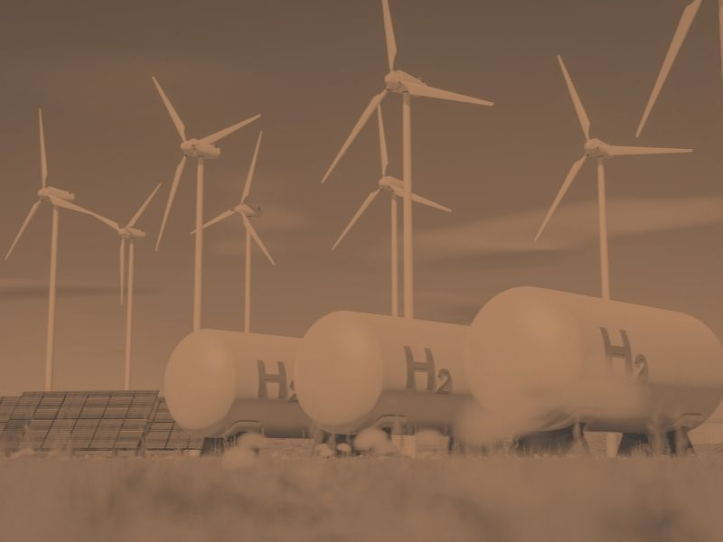
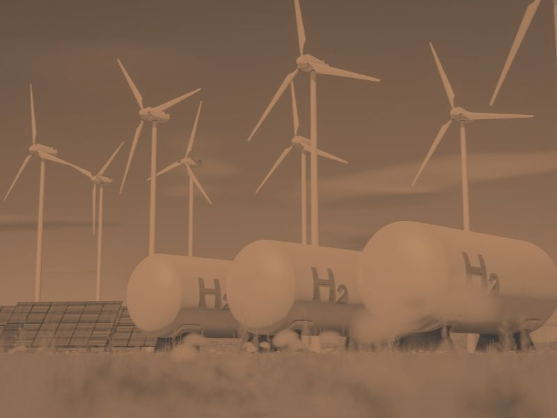

Environmental Impact
Measurable Results for a Cleaner Future
-31 kg
CO₂ Reduction per Ton of MSW
Negative environmental impact values prove exceptional eco-friendliness
95%
Waste Diversion Rate
Maximum waste conversion, minimum residue
86%
Waste Reduction Efficiency
Superior performance in waste minimization vs. 76% incineration
Techno-Economics of Plasma Disposal for Plastic Wastes
Calculation Breakdown
- Calorific Value of Plastic: 43.5 MJ/kg
- Overall Conversion Efficiency: 30%
- Output Electrical Energy: 13.05 MJ = 3.6 kWe for 1 kg/hr plastic conversion
- Auxiliary Power Requirement: 1.2 kWe
- Net Recovery: 2.4 kWe or Rs. 7.0 (approx)
Sensitivity Analysis
Sensitivity analysis in plasma gasification is crucial for understanding how different operational parameters impact the process's efficiency and costs.
Effect of Plasma Gas Flow Rate
Increasing the flow rate of plasma gas decreases syngas production.

Effect of MSW Flow Rate
Increasing the municipal solid waste (MSW) flow rate results in increased syngas production.

Energy Efficiency
Achieving a higher cold gas efficiency (CGE) is more crucial than reducing plasma power consumption for better energy efficiency.
CGE is a crucial metric for maximizing energy output while minimizing operational cost.
Operational Parameters
Sensitivity analysis aims to:
- Maximize net energy produced
- Minimize costs of the plant
- Optimize syngas quality
- Balance efficiency and operational expenses
Applications and Considerations
Waste Management
Plasma gasification is a viable technique for handling solid waste, including hazardous waste, with potential for energy recovery.
Cost Analysis
For a plasma gasification plant handling 5 TPD / 15 TPD as proposed by VMC & Varanasi district administration specially for MSW, the estimated capital and annual operational costs are usually high respectively.
Life-Cycle Analysis of Plasma Gasification
Plasma gasification plants are considered a promising technology for waste-to-energy conversion, with potential environmental benefits. A life cycle assessment (LCA) of a two-stage plasma gasification plant treating municipal solid waste (MSW) showed:
Environmental Benefits
The process resulted in negative values for all assessed environmental impact categories, indicating environmental benefits in terms of natural resource savings and reduced pollutant emissions.
Global Warming Potential
-31 kg CO₂ eq.
per ton of MSW treated
Negative value proves exceptional environmental performance
Plasma Gasification vs. Traditional Incineration
Key Findings
- Plasma gasification has negative environmental impact values – proving exceptional eco-friendliness
- 62.5% less residue than traditional incineration (15 kg vs 40+ kg per ton)
- Zero carcinogenic dioxins and furans emissions
- Outperforms incineration in all sustainability metrics
- Higher waste reduction efficiency (86% vs 76%)
- Superior waste diversion rate (95% vs 60-70%)
AQI Improvement for Varanasi
Current Challenges
- Varanasi ranks poorly in air quality indices
- Untreated waste entering storm drains
- Overloaded STPs during monsoon
- 32 drains connected, 16 incomplete
- CAG and CPCB concerns documented
Expected Improvements
- Dramatic AQI improvement through waste diversion
- Elimination of open burning and landfill emissions
- Zero groundwater contamination
- Clean air through CEMS monitoring
- Compliance with all CPCB guidelines
Transforming Varanasi's Future
From ancient heritage to sustainable future

Preserving Our Sacred Heritage
Varanasi, one of the world's oldest continuously inhabited cities, deserves waste management solutions that honor its cultural and spiritual significance while protecting the holy Ganges.
- Sacred ghats protected from pollution
- Clean air for pilgrims and residents
- Preserving architectural heritage

Building a Sustainable Tomorrow
With plasma gasification technology, Varanasi can become a model smart city - combining ancient wisdom with cutting-edge environmental solutions.
- Zero-waste circular economy
- Clean energy generation
- Green hydrogen production
- Improved public health
Challenges Faced by Other Waste-To-Energy Plants and Causes of Their Failures
While traditional Waste-to-Energy (WTE) plants have been implemented across India and globally, many face significant operational, environmental, and economic challenges that have led to underperformance or complete failure. Understanding these challenges highlights why plasma gasification offers a superior alternative.
Common Challenges in Traditional WTE Plants
1. High Dioxin and Furan Emissions
Traditional incineration plants operating below 850-1000°C produce carcinogenic dioxins and furans, which are major sources of cancer and health issues. These toxic compounds are released into the atmosphere, affecting nearby populations. Plasma gasification eliminates this issue entirely by operating at 3000°C+, completely destroying these harmful compounds.


2. Extensive Segregation Requirements
Most WTE plants require extensive waste segregation (wet/dry, organic/inorganic, recyclable/non-recyclable), which is labor-intensive, costly, and often poorly implemented in developing nations. Poor segregation leads to inefficient combustion and higher emissions. Plasma gasification requires minimal segregation, processing mixed waste streams effectively.
3. Large Residue Volumes
Incineration produces 40+ kg of ash and residue per ton of MSW, which must be landfilled, creating ongoing disposal challenges and costs. Plasma gasification produces only 15 kg of vitrified slag per ton – a 62.5% reduction – and this slag is non-toxic and usable in construction.
4. Inability to Handle Hazardous Waste
Traditional WTE plants cannot safely process biomedical, chemical, or hazardous industrial waste due to toxic emissions and incomplete combustion. Plasma gasification safely destroys all types of hazardous waste at ultra-high temperatures with zero toxic byproducts.
5. Positive Carbon Footprint
Many incineration plants have a positive CO₂ footprint, contributing to greenhouse gas emissions rather than reducing them. Plasma gasification has a negative carbon footprint of -31 kg CO₂ per ton of MSW, actively reducing greenhouse gases.

6. Low Waste Diversion Rates
Traditional WTE plants achieve only 60-70% waste diversion, with the remaining 30-40% ending up in landfills. Plasma gasification achieves 95% waste diversion, virtually eliminating landfill dependency.
7. Air and Water Pollution
Leachate from ash disposal contaminates groundwater, and emissions (even after scrubbing) contain harmful particulates, heavy metals, and acidic gases. Plasma gasification produces inert slag with zero leaching potential and emissions that meet the strictest CPCB standards.
8. Public Opposition and NIMBY (Not In My Backyard)
Communities near incineration plants often protest due to health concerns, odor, and pollution. This has led to shutdowns and project cancellations. Plasma gasification's clean operation and zero harmful emissions make it more socially acceptable and sustainable.
 

9. High Maintenance and Downtime
Corrosion from acidic gases, fouling of heat exchangers, and frequent breakdowns plague traditional WTE plants, reducing operational efficiency and increasing costs. Plasma gasification's sealed, high-temperature process reduces corrosion and maintenance requirements.
10. Regulatory Non-Compliance
Many WTE plants struggle to meet emission standards set by CPCB, SPCB, and international bodies, leading to fines, operational restrictions, or closures. Plasma gasification inherently meets or exceeds all regulatory requirements due to its clean operation.
Why Plasma Gasification Succeeds Where Traditional WTE Fails
Zero Dioxins & Furans
3000°C+ temperature eliminates carcinogens
Minimal Segregation
Processes mixed waste effectively
62.5% Less Residue
15 kg vs 40+ kg per ton MSW
Handles All Waste Types
Including hazardous and biomedical
Negative Carbon Footprint
-31 kg CO₂ per ton MSW
95% Waste Diversion
vs 60-70% for incineration
Zero Groundwater Contamination
Inert, non-leaching slag
Full Regulatory Compliance
Exceeds CPCB standards
Advantages Over Other WTE Plants
95% Diversion Rate
Industry-leading waste conversion efficiency
No Segregation Needed
Minimal waste sorting requirements
Hazardous Waste Safe
Can safely process dangerous materials
Clean Air Emissions
Zero harmful compounds released
No Groundwater Contamination
Complete environmental protection
Low Carbon Footprint
Negative CO₂ impact per ton processed
Biomass Compatible
Handles diverse waste streams
Industrial Waste Ready
Processes complex industrial waste